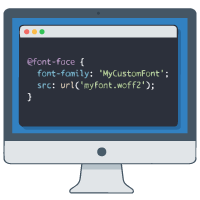

CSS カスタムフォント

- プロンプト例
CSSでカスタムフォントの事例を作って
- ローカルフォント
- Webフォント（Google Fonts）
- 自前フォント（@font-face）
① Google Fonts を使う基本パターン（最も一般的）
【html】
<head> <link rel="preconnect" href="https://fonts.googleapis.com"> <link rel="preconnect" href="https://fonts.gstatic.com" crossorigin> <link href="https://fonts.googleapis.com/css2?family=Noto+Sans+JP:wght@400;700&display=swap" rel="stylesheet"> </head>
【css】
body { font-family: "Noto Sans JP", sans-serif; }
ポイント
- 日本語対応
- 読み込みが高速
- 商用利用OK
- 実務で 最も使われる方式
② @font-face を使う（自前フォント読み込み）
フォルダ構成例
project/
├ css/
│ └ style.css
└ fonts/
├ myfont.woff2
└ myfont.woff
@font-face { font-family: "MyFont"; src: url("../fonts/myfont.woff2") format("woff2"), url("../fonts/myfont.woff") format("woff"); font-display: swap; } body { font-family: "MyFont", sans-serif; }
ポイント
- 完全に自由なフォントを使用可能
- オフラインでも表示OK
- ブランドサイト・LP・ロゴ系でよく使う
③ 太字・細字を切り替える実践構成（実務向け）
@font-face { font-family: "MyFont"; src: url("../fonts/myfont-regular.woff2") format("woff2"); font-weight: 400; } @font-face { font-family: "MyFont"; src: url("../fonts/myfont-bold.woff2") format("woff2"); font-weight: 700; } body { font-family: "MyFont", sans-serif; } h1 { font-weight: 700; } p { font-weight: 400; }
ポイント
- font-weight による 自然な切り替え
- プロの実務構成
④ 日本語Web制作でよく使う実践フォント指定例
body { font-family: "Noto Sans JP", "Hiragino Kaku Gothic ProN", "Hiragino Sans", Meiryo, sans-serif; }
ポイント
- 日本語表示の安定化
- Mac / Windows / Android / iOS 対応
⑤ デザイン性重視：英字 × 日本語 組み合わせ例
body { font-family: "Montserrat", "Noto Sans JP", sans-serif; }
→ 英字：Montserrat / 日本語：Noto Sans JP
実務でのおすすめ構成（最適解）
Google Fonts ＋ フォールバック指定
body { font-family: "Noto Sans JP", "Hiragino Kaku Gothic ProN", "Hiragino Sans", Meiryo, sans-serif; }
✔ 高速
✔ 安定
✔ 日本語最適
✔ 商用可